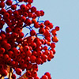

團友攝影成果精選特輯

在專業攝影團隊的指導與帶領下，加上愉悅放鬆的旅遊氣氛，團友們拍出的照片格外令人驚艷與感動，在經過照片所屬團友的同意下，我們特別選出優秀的作品讓大家欣賞，也歡迎愛攝影愛旅遊的你，參加我們所舉辦的攝影旅遊活動。

Ray知名攝影協會會長，作品散見國際知名雜誌。 |
|
 |
Kuma來自北海道的攝影大師，足跡遍及日本全島，閱歷及攝影經驗之豐富，絕對能帶給您嶄新的新視野。 |
|  | Queen留英回國的女性攝影師，銳利敏感的攝影風格為她贏得「女王」的封號，而在豪邁的影像中亦散發出細膩的氛圍。 |

 |
Eric不僅精通各國歷史地理，還能把各地景點介紹得生動活潑，加上像朋友般親切的個性，談笑風生幽默風趣的特質，一定會讓你的旅途永生難忘。 |
Calvin人稱導遊界的極品，迷倒眾生的帥氣加上豐富的專業知識，讓旅途充滿歡樂與新鮮感。 |
|
Maggie思緒細密、經驗老到，十年的帶團經驗，豐沛充實的專業知識，不僅讓你玩得盡興，更可讓你了解到許多當地的風俗民情。 |
|
|
Kuma來自北海道的攝影大師，足跡遍及日本全島，閱歷及攝影經驗之豐富，絕對能帶給您嶄新的新視野。 |